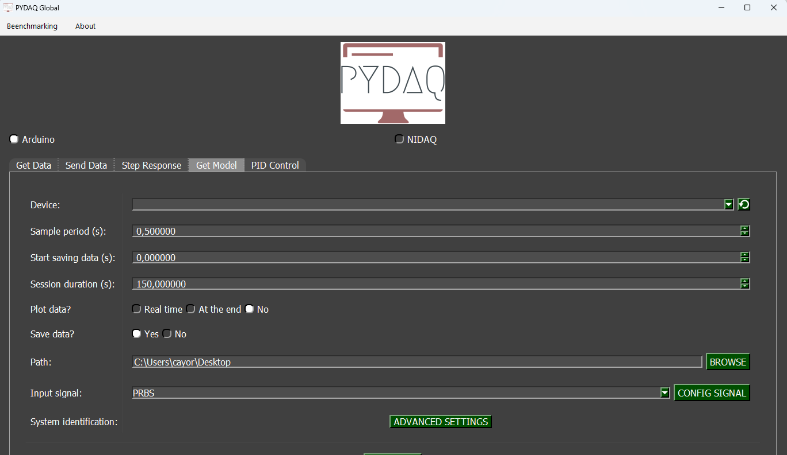
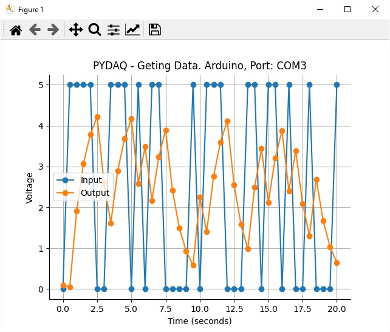

Model Acquisition with Arduino
NOTE 1: before working with PYDAQ, device driver should be installed and working correctly as a DAQ (Data Acquisition) device
NOTE 2: To get models with Arduino, the code provided here should be firstly uploaded in your Arduino board. Default input port is A0, and default output port is 13. Those ports can be changed in the above-mentioned code. This code only works with digital output, since this is a limitation of Arduino Boards.
NOTE 3: PYDAQ is programmed to use 10 bits as an ADC resolution, and 0V and 5V as the input range. To change this, the user can alter the following variables:
self.arduino_ai_bits = 10
self.ard_ai_max = 5
self.ard_ai_min = 0
Adquiring the model using Graphical User Interface (GUI)
Using GUI to adquire the model is really straighforward and require only two LOC (lines of code):
from pydaq.pydaq_global import PydaqGui
PydaqGui()
After this command, the following screen will show up. In "Get Model" screen the user is able to define parameters and start the experiment to adquire the model.

Parameters
-
Choose your Arduino: This option allows you to choose the Arduino you are going to use.
-
Sample Period: The user can change the sample period, i.e., time (in seconds) between samples.
-
Start saving data: Choose when the data will start being recorded to obtain the model.
-
Session duration: The user can choose the session duration.
-
Plot and Save data: The user can choose whether to plot and save the data.
-
Path: Choose where data will be saved.
Input Signal
PRBS
A pseudorandom binary sequence (PRBS) is a deterministic signal that alternates between two values and exhibits characteristics similar to white noise. The PRBS signal is inherently periodic, with a maximum period length of 2ⁿ–1, where n represents the order of the PRBS. For more information: Nonlinear System Identification: Theory and Practice with Sysidentpy.
In the Config signal button, the user can customize the signal parameters.
Advanced Settings
The library used for obtaining mathematical models is SysidentPy. It is a Python module for System Identification using NARMAX models, built on top of numpy and distributed under the 3-Clause BSD license. You can configure its parameters and customize the way the mathematical model is obtained. Read more about this in the SysidentPy documentation.
By pressing the Get Model button, the program will start and the model will be obtained.
Run Get model from the command line
# Importing PYDAQ
from pydaq.get_model import GetModel
# Defining parameters
com_port_arduino = 'COM3'
session_duration_in_s = 100
sample_period_in_s = 0.5
save_data = True
plot_data = True
# system identification parameters
degree = 2
start_save_time_in_s = 0
out_lag = 2
inp_lag = 2
num_info_val = 6
estimator = 'least_squares'
ext_lsq = True
perc_value_to_train_the_model = 15
# PRBS input parameters
prbs_bits = 6
prbs_seed = 100
var_tb = 1
# Class GetModel
g = GetModel(
com= com_port_arduino,
session_duration= session_duration_in_s,
ts= sample_period_in_s,
save= save_data,
plot= plot_data,
degree= 2,
start_save_time= start_save_time_in_s,
out_lag= out_lag,
inp_lag= inp_lag,
num_info_values= num_info_val,
estimator= estimator,
ext_lsq= ext_lsq,
perc_value= perc_value_to_train_the_model,
prbs_bits= prbs_bits,
prbs_seed= prbs_seed,
var_tb= var_tb
)
# Method get_model_arduino
g.get_model_arduino()
NOTE: data will be saved on desktop, by default. To change the path the user can define "g.path = Desired path".
If the user chooses to plot, this screen will appear:

At the end of the user-defined time, screens with the results will be shown as depicted below.
Example GIF